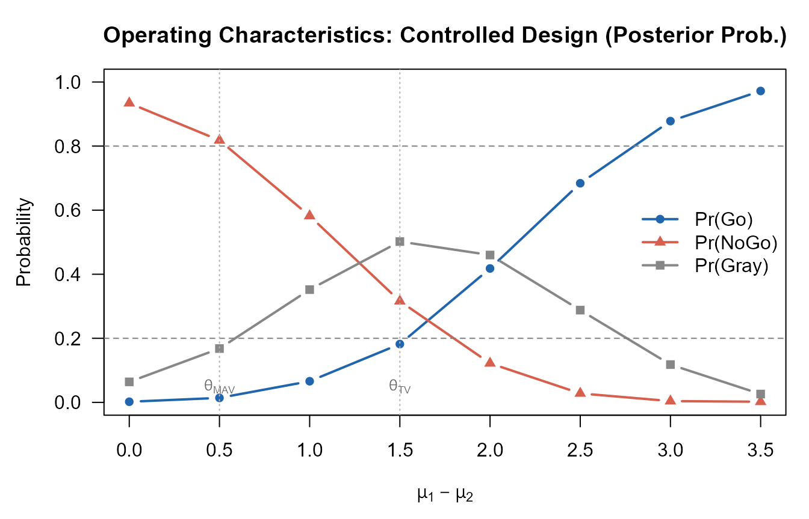
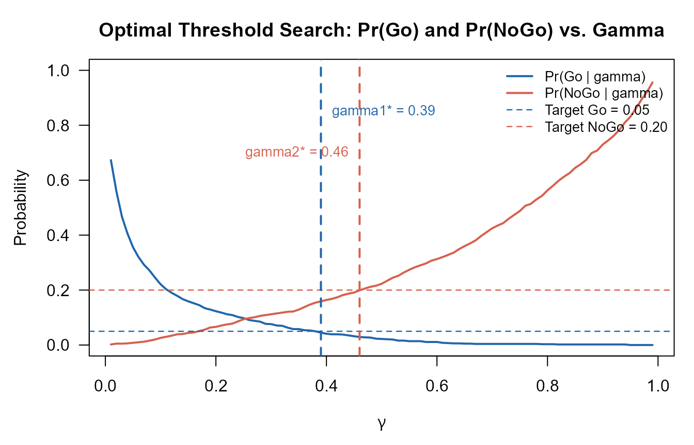

Motivating Scenario
We use a hypothetical Phase IIa proof-of-concept (PoC) trial in moderate-to-severe rheumatoid arthritis (RA). The investigational drug is compared with placebo in a 1:1 randomised controlled trial with patients per arm.
Endpoint: change from baseline in DAS28 score (a larger decrease indicates greater improvement).
Clinically meaningful thresholds (posterior probability):
- Target Value () = 1.5 (ambitious target)
- Minimum Acceptable Value () = 0.5 (lower bar)
Null hypothesis threshold (predictive probability): .
Decision thresholds: (Go), (NoGo).
Observed data (used in Sections 2–4): , (treatment); , (control).
1. Bayesian Model: Normal-Inverse-Chi-Squared Conjugate
1.1 Prior Distribution
For group (: treatment, : control), we model the continuous outcome as
The conjugate prior is the Normal-Inverse-Chi-squared (N-Inv-) distribution:
where is the prior mean, the prior precision (pseudo-sample size), the prior degrees of freedom, and the prior scale.
Vague (Jeffreys) prior is obtained by letting and , which places minimal information on the parameters.
1.2 Posterior Distribution
Given observations with sample mean and sample standard deviation , the posterior parameters are updated as follows:
The marginal posterior of the group mean is a non-standardised -distribution:
Under the vague prior (), this simplifies to
1.3 Posterior of the Treatment Effect
The treatment effect is . Since the two groups are independent, the posterior of is the distribution of the difference of two independent non-standardised -variables:
where the posterior scale is .
The posterior probability that exceeds a threshold ,
is computed by one of three methods described in Section 3.
2. Posterior Predictive Probability
3. Three Computation Methods
3.1 Numerical Integration (NI)
The exact CDF of is expressed as a one-dimensional integral:
where
and
are the CDF and PDF of the non-standardised
-distribution
respectively. This integral is evaluated by
stats::integrate() (adaptive Gauss-Kronrod quadrature) in
ptdiff_NI(). The method is exact but evaluates the integral
once per call and is therefore slow for large-scale simulation.
3.2 Monte Carlo Simulation (MC)
independent samples are drawn from each marginal:
and the probability is estimated as
When called from pbayesdecisionprob1cont() with
simulation replicates, all draws are generated as a single
matrix to avoid loop overhead.
3.3 Moment-Matching Approximation (MM)
The difference is approximated by a single non-standardised -distribution by matching its first two even moments.
Step 1: The mean of is
Step 2: The variance of each is
so the variance of is
Step 3: The effective degrees of freedom are obtained from the fourth-moment equation. The fourth central moment of is
Matching the fourth moment of to that of yields
where
Step 4: The scale is determined from the second-moment equation:
Step 5: The CDF is evaluated as
via a single call to stats::pt(). This method requires
,
is exact in the normal limit
(),
and is fully vectorised — making it the recommended method for
large-scale simulation.
3.4 Comparison of the Three Methods
# Observed data (nMC excluded from base list; passed individually per method)
args_base <- list(
prob = 'posterior', design = 'controlled', prior = 'vague',
theta0 = 1.0,
n1 = 15, n2 = 15,
bar.y1 = 3.2, s1 = 2.0,
bar.y2 = 1.1, s2 = 1.8,
m1 = NULL, m2 = NULL,
kappa01 = NULL, kappa02 = NULL, nu01 = NULL, nu02 = NULL,
mu01 = NULL, mu02 = NULL, sigma01 = NULL, sigma02 = NULL,
r = NULL,
ne1 = NULL, ne2 = NULL, alpha01 = NULL, alpha02 = NULL,
bar.ye1 = NULL, se1 = NULL, bar.ye2 = NULL, se2 = NULL
)
p_ni <- do.call(pbayespostpred1cont,
c(args_base, list(CalcMethod = 'NI', nMC = NULL)))
p_mm <- do.call(pbayespostpred1cont,
c(args_base, list(CalcMethod = 'MM', nMC = NULL)))
set.seed(42)
p_mc <- do.call(pbayespostpred1cont,
c(args_base, list(CalcMethod = 'MC', nMC = 10000L)))
cat(sprintf("NI : %.6f (exact)\n", p_ni))
#> NI : 0.069397 (exact)
cat(sprintf("MM : %.6f (approx)\n", p_mm))
#> MM : 0.069397 (approx)
cat(sprintf("MC : %.6f (n_MC=10000)\n", p_mc))
#> MC : 0.073400 (n_MC=10000)4. Study Designs
4.1 Controlled Design
Standard parallel-group RCT with observed data from both treatment (, , ) and control (, , ) arms. Both posteriors are updated from the PoC data.
Vague prior — posterior probability:
# P(mu1 - mu2 > theta_TV | data) and P(mu1 - mu2 <= theta_MAV | data)
p_tv <- pbayespostpred1cont(
prob = 'posterior', design = 'controlled', prior = 'vague',
CalcMethod = 'NI', theta0 = 1.5, nMC = NULL,
n1 = 15, n2 = 15,
bar.y1 = 3.2, s1 = 2.0,
bar.y2 = 1.1, s2 = 1.8,
m1 = NULL, m2 = NULL,
kappa01 = NULL, kappa02 = NULL, nu01 = NULL, nu02 = NULL,
mu01 = NULL, mu02 = NULL, sigma01 = NULL, sigma02 = NULL,
r = NULL,
ne1 = NULL, ne2 = NULL, alpha01 = NULL, alpha02 = NULL,
bar.ye1 = NULL, se1 = NULL, bar.ye2 = NULL, se2 = NULL,
lower.tail = FALSE
)
p_mav <- pbayespostpred1cont(
prob = 'posterior', design = 'controlled', prior = 'vague',
CalcMethod = 'NI', theta0 = 0.5, nMC = NULL,
n1 = 15, n2 = 15,
bar.y1 = 3.2, s1 = 2.0,
bar.y2 = 1.1, s2 = 1.8,
m1 = NULL, m2 = NULL,
kappa01 = NULL, kappa02 = NULL, nu01 = NULL, nu02 = NULL,
mu01 = NULL, mu02 = NULL, sigma01 = NULL, sigma02 = NULL,
r = NULL,
ne1 = NULL, ne2 = NULL, alpha01 = NULL, alpha02 = NULL,
bar.ye1 = NULL, se1 = NULL, bar.ye2 = NULL, se2 = NULL,
lower.tail = FALSE
)
cat(sprintf("P(theta > theta_TV | data) = %.4f -> Go criterion: >= 0.80? %s\n",
p_tv, ifelse(p_tv >= 0.80, "YES", "NO")))
#> P(theta > theta_TV | data) = 0.7940 -> Go criterion: >= 0.80? NO
cat(sprintf("P(theta <= theta_MAV | data) = %.4f -> NoGo criterion: >= 0.20? %s\n",
1 - p_mav, ifelse((1 - p_mav) >= 0.20, "YES", "NO")))
#> P(theta <= theta_MAV | data) = 0.0178 -> NoGo criterion: >= 0.20? NO
cat(sprintf("Decision: %s\n",
ifelse(p_tv >= 0.80 & (1 - p_mav) < 0.20, "Go",
ifelse(p_tv < 0.80 & (1 - p_mav) >= 0.20, "NoGo",
ifelse(p_tv >= 0.80 & (1 - p_mav) >= 0.20, "Miss", "Gray")))))
#> Decision: GrayN-Inv- informative prior:
Historical knowledge suggests treatment mean and control mean with prior pseudo-sample size and degrees of freedom .
p_tv_inf <- pbayespostpred1cont(
prob = 'posterior', design = 'controlled', prior = 'N-Inv-Chisq',
CalcMethod = 'NI', theta0 = 1.5, nMC = NULL,
n1 = 15, n2 = 15,
bar.y1 = 3.2, s1 = 2.0,
bar.y2 = 1.1, s2 = 1.8,
m1 = NULL, m2 = NULL,
kappa01 = 5, kappa02 = 5,
nu01 = 5, nu02 = 5,
mu01 = 3.0, mu02 = 1.0,
sigma01 = 2.0, sigma02 = 1.8,
r = NULL,
ne1 = NULL, ne2 = NULL, alpha01 = NULL, alpha02 = NULL,
bar.ye1 = NULL, se1 = NULL, bar.ye2 = NULL, se2 = NULL,
lower.tail = FALSE
)
cat(sprintf("P(theta > theta_TV | data, N-Inv-Chisq prior) = %.4f\n", p_tv_inf))
#> P(theta > theta_TV | data, N-Inv-Chisq prior) = 0.8274Posterior predictive probability (future Phase III: ):
p_pred <- pbayespostpred1cont(
prob = 'predictive', design = 'controlled', prior = 'vague',
CalcMethod = 'NI', theta0 = 1.0, nMC = NULL,
n1 = 15, n2 = 15, m1 = 60, m2 = 60,
bar.y1 = 3.2, s1 = 2.0,
bar.y2 = 1.1, s2 = 1.8,
kappa01 = NULL, kappa02 = NULL, nu01 = NULL, nu02 = NULL,
mu01 = NULL, mu02 = NULL, sigma01 = NULL, sigma02 = NULL,
r = NULL,
ne1 = NULL, ne2 = NULL, alpha01 = NULL, alpha02 = NULL,
bar.ye1 = NULL, se1 = NULL, bar.ye2 = NULL, se2 = NULL,
lower.tail = FALSE
)
cat(sprintf("Predictive probability (m1 = m2 = 60) = %.4f\n", p_pred))
#> Predictive probability (m1 = m2 = 60) = 0.99664.2 Uncontrolled Design (Single-Arm)
When no concurrent control arm is enrolled, the control distribution is specified from external knowledge:
- Hypothetical control mean: (fixed scalar)
- Variance scaling: , so assumes equal variances
The posterior of the control mean is not updated from observed data; only the treatment posterior is updated.
p_unctrl <- pbayespostpred1cont(
prob = 'posterior', design = 'uncontrolled', prior = 'vague',
CalcMethod = 'MM', theta0 = 1.5, nMC = NULL,
n1 = 15, n2 = 15,
bar.y1 = 3.2, s1 = 2.0,
bar.y2 = NULL, s2 = NULL,
m1 = NULL, m2 = NULL,
kappa01 = NULL, kappa02 = NULL, nu01 = NULL, nu02 = NULL,
mu01 = NULL, mu02 = 1.0, # hypothetical control mean
sigma01 = NULL, sigma02 = NULL,
r = 1.0, # equal variance assumption
ne1 = NULL, ne2 = NULL, alpha01 = NULL, alpha02 = NULL,
bar.ye1 = NULL, se1 = NULL, bar.ye2 = NULL, se2 = NULL,
lower.tail = FALSE
)
cat(sprintf("P(theta > theta_TV | data, uncontrolled) = %.4f\n", p_unctrl))
#> P(theta > theta_TV | data, uncontrolled) = 0.81844.3 External Control Design (Power Prior)
Historical external data from a prior study are incorporated via a power prior with borrowing weight . The augmented posterior parameters for the control group are:
with degrees of freedom .
Here, , , , (50% borrowing from external control):
p_ext <- pbayespostpred1cont(
prob = 'posterior', design = 'external', prior = 'vague',
CalcMethod = 'MM', theta0 = 1.5, nMC = NULL,
n1 = 15, n2 = 15,
bar.y1 = 3.2, s1 = 2.0,
bar.y2 = 1.1, s2 = 1.8,
m1 = NULL, m2 = NULL,
kappa01 = NULL, kappa02 = NULL, nu01 = NULL, nu02 = NULL,
mu01 = NULL, mu02 = NULL, sigma01 = NULL, sigma02 = NULL,
r = NULL,
ne1 = NULL, ne2 = 20L, alpha01 = NULL, alpha02 = 0.5,
bar.ye1 = NULL, se1 = NULL, bar.ye2 = 0.9, se2 = 1.8,
lower.tail = FALSE
)
cat(sprintf("P(theta > theta_TV | data, external control, alpha=0.5) = %.4f\n",
p_ext))
#> P(theta > theta_TV | data, external control, alpha=0.5) = 0.8517Effect of the borrowing weight: varying from 0 to 1 shows how external data influence the posterior.
# alpha02 must be in (0, 1]; start from 0.01 to avoid validation error
alpha_seq <- c(0.01, seq(0.1, 1.0, by = 0.1))
p_alpha <- sapply(alpha_seq, function(a) {
pbayespostpred1cont(
prob = 'posterior', design = 'external', prior = 'vague',
CalcMethod = 'MM', theta0 = 1.5, nMC = NULL,
n1 = 15, n2 = 15,
bar.y1 = 3.2, s1 = 2.0,
bar.y2 = 1.1, s2 = 1.8,
m1 = NULL, m2 = NULL,
kappa01 = NULL, kappa02 = NULL, nu01 = NULL, nu02 = NULL,
mu01 = NULL, mu02 = NULL, sigma01 = NULL, sigma02 = NULL,
r = NULL,
ne1 = NULL, ne2 = 20L, alpha01 = NULL, alpha02 = a,
bar.ye1 = NULL, se1 = NULL, bar.ye2 = 0.9, se2 = 1.8,
lower.tail = FALSE
)
})
data.frame(alpha_e2 = alpha_seq, P_gt_TV = round(p_alpha, 4))
#> alpha_e2 P_gt_TV
#> 1 0.01 0.7994
#> 2 0.10 0.8133
#> 3 0.20 0.8259
#> 4 0.30 0.8361
#> 5 0.40 0.8446
#> 6 0.50 0.8517
#> 7 0.60 0.8577
#> 8 0.70 0.8629
#> 9 0.80 0.8674
#> 10 0.90 0.8713
#> 11 1.00 0.87485. Operating Characteristics
5.1 Definition
For a given true parameter , the operating characteristics are the probabilities of each decision outcome under the Go/NoGo/Gray/Miss rule with thresholds . These are estimated by Monte Carlo simulation over replicates:
where
are evaluated for the
-th
simulated dataset
.
A Miss
(
AND
)
indicates an inconsistent threshold configuration and triggers an error
by default (error_if_Miss = TRUE).
5.2 Controlled Design — Multiple Scenarios
oc_ctrl <- pbayesdecisionprob1cont(
nsim = 500L,
prob = 'posterior',
design = 'controlled',
prior = 'vague',
CalcMethod = 'MM',
theta.TV = 1.5, theta.MAV = 0.5, theta.NULL = NULL,
nMC = NULL,
gamma1 = 0.80, gamma2 = 0.20,
n1 = 15, n2 = 15,
m1 = NULL, m2 = NULL,
kappa01 = NULL, kappa02 = NULL, nu01 = NULL, nu02 = NULL,
mu01 = NULL, mu02 = NULL, sigma01 = NULL, sigma02 = NULL,
mu1 = c(1.0, 1.5, 2.0, 2.5, 3.0, 3.5),
mu2 = 1.0,
sigma1 = 2.0,
sigma2 = 2.0,
r = NULL,
ne1 = NULL, ne2 = NULL, alpha01 = NULL, alpha02 = NULL,
bar.ye1 = NULL, se1 = NULL, bar.ye2 = NULL, se2 = NULL,
error_if_Miss = TRUE, Gray_inc_Miss = FALSE,
seed = 42L
)
print(oc_ctrl)
#> Go/NoGo/Gray Decision Probabilities (Single Continuous Endpoint)
#> ------------------------------------------------------------
#> Probability type : posterior
#> Design : controlled
#> Method : Moment-Matching (MM)
#> Simulations : 500
#> Seed : 42
#> Threshold(s) : TV = 1.5, MAV = 0.5
#> Go threshold : gamma1 = 0.8
#> NoGo threshold : gamma2 = 0.2
#> Sample size : n1 = 15, n2 = 15
#> True parameters : sigma1 = 2, sigma2 = 2
#> Prior (vague) : (no hyperparameters)
#> Miss handling : error_if_Miss = TRUE, Gray_inc_Miss = FALSE
#> ------------------------------------------------------------
#> mu1 mu2 Go Gray NoGo
#> 1.0 1 0.0020 0.0640 0.9340
#> 1.5 1 0.0140 0.1680 0.8180
#> 2.0 1 0.0660 0.3520 0.5820
#> 2.5 1 0.1820 0.5020 0.3160
#> 3.0 1 0.4180 0.4600 0.1220
#> 3.5 1 0.6840 0.2880 0.0280
#> ------------------------------------------------------------5.3 Figure: Go/NoGo/Gray Probabilities vs. True Treatment Effect
# Compute OC over a finer grid of true treatment means
mu1_seq <- seq(1.0, 4.5, by = 0.5)
oc_grid <- pbayesdecisionprob1cont(
nsim = 500L,
prob = 'posterior',
design = 'controlled',
prior = 'vague',
CalcMethod = 'MM',
theta.TV = 1.5, theta.MAV = 0.5, theta.NULL = NULL,
nMC = NULL,
gamma1 = 0.80, gamma2 = 0.20,
n1 = 15, n2 = 15,
m1 = NULL, m2 = NULL,
kappa01 = NULL, kappa02 = NULL, nu01 = NULL, nu02 = NULL,
mu01 = NULL, mu02 = NULL, sigma01 = NULL, sigma02 = NULL,
mu1 = mu1_seq,
mu2 = 1.0,
sigma1 = 2.0,
sigma2 = 2.0,
r = NULL,
ne1 = NULL, ne2 = NULL, alpha01 = NULL, alpha02 = NULL,
bar.ye1 = NULL, se1 = NULL, bar.ye2 = NULL, se2 = NULL,
error_if_Miss = TRUE, Gray_inc_Miss = FALSE,
seed = 42L
)
delta <- oc_grid$mu1 - 1.0 # true treatment effect (mu1 - mu2)
# --- Plot ---
old_par <- par(mar = c(4.5, 4.5, 3, 1))
plot(delta, oc_grid$Go,
type = "b", pch = 16, lwd = 2,
col = "#2166AC",
ylim = c(0, 1), xlab = expression(mu[1] - mu[2]),
ylab = "Probability",
main = "Operating Characteristics: Controlled Design (Posterior Prob.)",
las = 1)
lines(delta, oc_grid$NoGo,
type = "b", pch = 17, lwd = 2, col = "#D6604D")
lines(delta, oc_grid$Gray,
type = "b", pch = 15, lwd = 2, col = "#878787")
abline(h = c(0.20, 0.80), lty = 2, col = "gray50")
abline(v = c(0.5, 1.5), lty = 3, col = "gray70")
legend("right",
legend = c("Pr(Go)", "Pr(NoGo)", "Pr(Gray)"),
col = c("#2166AC", "#D6604D", "#878787"),
pch = c(16, 17, 15), lwd = 2, bty = "n")
text(0.5, 0.05, expression(theta[MAV]), col = "gray40", cex = 0.8)
text(1.5, 0.05, expression(theta[TV]), col = "gray40", cex = 0.8)
Operating characteristics (Go/NoGo/Gray) as a function of the true treatment effect (mu1 - mu2). Controlled design, vague prior, MM method. True mu2 = 1.0, sigma1 = sigma2 = 2.0, n1 = n2 = 15, gamma1 = 0.80, gamma2 = 0.20.
par(old_par)5.4 Uncontrolled Design — Operating Characteristics
oc_unctrl <- pbayesdecisionprob1cont(
nsim = 500L,
prob = 'posterior',
design = 'uncontrolled',
prior = 'vague',
CalcMethod = 'MM',
theta.TV = 1.5, theta.MAV = 0.5, theta.NULL = NULL,
nMC = NULL,
gamma1 = 0.80, gamma2 = 0.20,
n1 = 15, n2 = 15,
m1 = NULL, m2 = NULL,
kappa01 = NULL, kappa02 = NULL, nu01 = NULL, nu02 = NULL,
mu01 = NULL, mu02 = 1.0, sigma01 = NULL, sigma02 = NULL,
mu1 = c(1.5, 2.0, 2.5, 3.0, 3.5),
mu2 = 1.0,
sigma1 = 2.0,
sigma2 = 2.0,
r = 1.0,
ne1 = NULL, ne2 = NULL, alpha01 = NULL, alpha02 = NULL,
bar.ye1 = NULL, se1 = NULL, bar.ye2 = NULL, se2 = NULL,
error_if_Miss = TRUE, Gray_inc_Miss = FALSE,
seed = 1L
)
print(oc_unctrl)
#> Go/NoGo/Gray Decision Probabilities (Single Continuous Endpoint)
#> ------------------------------------------------------------
#> Probability type : posterior
#> Design : uncontrolled
#> Method : Moment-Matching (MM)
#> Simulations : 500
#> Seed : 1
#> Threshold(s) : TV = 1.5, MAV = 0.5
#> Go threshold : gamma1 = 0.8
#> NoGo threshold : gamma2 = 0.2
#> Sample size : n1 = 15, n2 = 15
#> True parameters : sigma1 = 2
#> Prior (vague) : (no hyperparameters)
#> Uncontrolled : r = 1
#> Miss handling : error_if_Miss = TRUE, Gray_inc_Miss = FALSE
#> ------------------------------------------------------------
#> mu1 Go Gray NoGo
#> 1.5 0.0000 0.0940 0.9060
#> 2.0 0.0160 0.3760 0.6080
#> 2.5 0.0940 0.6380 0.2680
#> 3.0 0.3920 0.5500 0.0580
#> 3.5 0.7320 0.2600 0.0080
#> ------------------------------------------------------------5.5 External Control Design — Operating Characteristics
oc_ext <- pbayesdecisionprob1cont(
nsim = 500L,
prob = 'posterior',
design = 'external',
prior = 'vague',
CalcMethod = 'MM',
theta.TV = 1.5, theta.MAV = 0.5, theta.NULL = NULL,
nMC = NULL,
gamma1 = 0.80, gamma2 = 0.20,
n1 = 15, n2 = 15,
m1 = NULL, m2 = NULL,
kappa01 = NULL, kappa02 = NULL, nu01 = NULL, nu02 = NULL,
mu01 = NULL, mu02 = NULL, sigma01 = NULL, sigma02 = NULL,
mu1 = c(1.5, 2.0, 2.5, 3.0, 3.5),
mu2 = 1.0,
sigma1 = 2.0,
sigma2 = 2.0,
r = NULL,
ne1 = NULL, ne2 = 20L, alpha01 = NULL, alpha02 = 0.5,
bar.ye1 = NULL, se1 = NULL, bar.ye2 = 0.9, se2 = 1.8,
error_if_Miss = TRUE, Gray_inc_Miss = FALSE,
seed = 2L
)
print(oc_ext)
#> Go/NoGo/Gray Decision Probabilities (Single Continuous Endpoint)
#> ------------------------------------------------------------
#> Probability type : posterior
#> Design : external
#> Method : Moment-Matching (MM)
#> Simulations : 500
#> Seed : 2
#> Threshold(s) : TV = 1.5, MAV = 0.5
#> Go threshold : gamma1 = 0.8
#> NoGo threshold : gamma2 = 0.2
#> Sample size : n1 = 15, n2 = 15
#> True parameters : sigma1 = 2, sigma2 = 2
#> Prior (vague) : (no hyperparameters)
#> External data : ne1 = NULL, ne2 = 20, alpha01 = NULL, alpha02 = 0.5
#> bar.ye1 = NULL, bar.ye2 = 0.9, se1 = NULL, se2 = 1.8
#> Miss handling : error_if_Miss = TRUE, Gray_inc_Miss = FALSE
#> ------------------------------------------------------------
#> mu1 mu2 Go Gray NoGo
#> 1.5 1 0.0100 0.2000 0.7900
#> 2.0 1 0.0520 0.4840 0.4640
#> 2.5 1 0.2100 0.5940 0.1960
#> 3.0 1 0.5360 0.4220 0.0420
#> 3.5 1 0.8040 0.1920 0.0040
#> ------------------------------------------------------------6. Optimal Threshold Search
6.1 Objective
The getgamma1cont() function finds the optimal pair
by grid search over
,
where:
- : selected so that satisfies a criterion against a target value (e.g., under the null scenario ).
- : selected so that satisfies a criterion (e.g., under the null scenario).
The search uses a two-stage strategy:
Stage 1 (Simulate once): datasets are generated from the true parameter distribution and the probabilities and are computed for each replicate — independently of .
Stage 2 (Sweep over ): for each candidate , and are computed as empirical proportions over the precomputed indicator values without further probability evaluations.
6.2 Example: Controlled Design, Posterior Probability
res_gamma <- getgamma1cont(
nsim = 1000L,
prob = 'posterior',
design = 'controlled',
prior = 'vague',
CalcMethod = 'MM',
theta.TV = 1.5, theta.MAV = 0.5, theta.NULL = NULL,
nMC = NULL,
mu1 = 1.0, mu2 = 1.0, # null scenario: no treatment effect
sigma1 = 2.0, sigma2 = 2.0,
target_go = 0.05, target_nogo = 0.20,
crit_go = '<', crit_nogo = '<',
sel_go = 'smallest', sel_nogo = 'largest',
n1 = 15L, n2 = 15L, m1 = NULL, m2 = NULL,
kappa01 = NULL, kappa02 = NULL, nu01 = NULL, nu02 = NULL,
mu01 = NULL, mu02 = NULL, sigma01 = NULL, sigma02 = NULL,
r = NULL,
ne1 = NULL, ne2 = NULL, alpha01 = NULL, alpha02 = NULL,
bar.ye1 = NULL, bar.ye2 = NULL, se1 = NULL, se2 = NULL,
gamma_grid = seq(0.01, 0.99, by = 0.01),
seed = 42L
)
print(res_gamma)
#> $gamma1
#> [1] 0.39
#>
#> $gamma2
#> [1] 0.46
#>
#> $PrGo_at_gamma1
#> [1] 0.045
#>
#> $PrNoGo_at_gamma2
#> [1] 0.199
#>
#> $gamma_grid
#> [1] 0.01 0.02 0.03 0.04 0.05 0.06 0.07 0.08 0.09 0.10 0.11 0.12 0.13 0.14 0.15
#> [16] 0.16 0.17 0.18 0.19 0.20 0.21 0.22 0.23 0.24 0.25 0.26 0.27 0.28 0.29 0.30
#> [31] 0.31 0.32 0.33 0.34 0.35 0.36 0.37 0.38 0.39 0.40 0.41 0.42 0.43 0.44 0.45
#> [46] 0.46 0.47 0.48 0.49 0.50 0.51 0.52 0.53 0.54 0.55 0.56 0.57 0.58 0.59 0.60
#> [61] 0.61 0.62 0.63 0.64 0.65 0.66 0.67 0.68 0.69 0.70 0.71 0.72 0.73 0.74 0.75
#> [76] 0.76 0.77 0.78 0.79 0.80 0.81 0.82 0.83 0.84 0.85 0.86 0.87 0.88 0.89 0.90
#> [91] 0.91 0.92 0.93 0.94 0.95 0.96 0.97 0.98 0.99
#>
#> $PrGo_grid
#> [1] 0.673 0.559 0.467 0.406 0.356 0.320 0.292 0.271 0.245 0.221 0.203 0.190
#> [13] 0.179 0.167 0.159 0.152 0.145 0.134 0.129 0.123 0.118 0.112 0.109 0.102
#> [25] 0.098 0.091 0.088 0.085 0.077 0.076 0.071 0.070 0.063 0.058 0.058 0.054
#> [37] 0.053 0.050 0.045 0.041 0.039 0.039 0.038 0.035 0.032 0.029 0.028 0.027
#> [49] 0.023 0.022 0.021 0.020 0.016 0.016 0.014 0.014 0.014 0.011 0.011 0.011
#> [61] 0.008 0.007 0.006 0.006 0.005 0.005 0.004 0.004 0.004 0.004 0.004 0.004
#> [73] 0.004 0.004 0.004 0.004 0.004 0.004 0.003 0.003 0.003 0.002 0.002 0.002
#> [85] 0.002 0.002 0.002 0.002 0.002 0.002 0.002 0.002 0.002 0.002 0.000 0.000
#> [97] 0.000 0.000 0.000
#>
#> $PrNoGo_grid
#> [1] 0.002 0.005 0.005 0.006 0.008 0.010 0.012 0.016 0.020 0.026 0.030 0.034
#> [13] 0.039 0.040 0.044 0.046 0.051 0.056 0.064 0.066 0.071 0.075 0.078 0.086
#> [25] 0.094 0.098 0.101 0.106 0.109 0.112 0.115 0.118 0.121 0.122 0.129 0.138
#> [37] 0.147 0.154 0.159 0.164 0.168 0.174 0.182 0.187 0.191 0.199 0.206 0.212
#> [49] 0.216 0.223 0.234 0.245 0.252 0.264 0.274 0.283 0.290 0.297 0.307 0.313
#> [61] 0.320 0.328 0.336 0.349 0.360 0.370 0.381 0.397 0.411 0.425 0.435 0.444
#> [73] 0.460 0.474 0.488 0.507 0.514 0.530 0.543 0.563 0.580 0.598 0.613 0.626
#> [85] 0.645 0.658 0.674 0.699 0.708 0.730 0.745 0.762 0.783 0.810 0.831 0.861
#> [97] 0.893 0.921 0.956
#>
#> attr(,"class")
#> [1] "getgamma1cont"6.3 Figure: Pr(Go) and Pr(NoGo) Over the Gamma Grid
grid_df <- data.frame(
gamma = res_gamma$gamma_grid,
PrGo = res_gamma$PrGo_grid,
PrNoGo = res_gamma$PrNoGo_grid
)
old_par2 <- par(mar = c(4.5, 4.5, 3, 1))
# Initialize the plot before calling low-level plotting functions (lines, abline, text)
plot(grid_df$gamma, grid_df$PrGo,
type = "l", lwd = 2, col = "#2166AC",
ylim = c(0, 1),
xlab = expression(gamma),
ylab = "Probability",
main = "Optimal Threshold Search: Pr(Go) and Pr(NoGo) vs. Gamma",
las = 1)
lines(grid_df$gamma, grid_df$PrNoGo,
lwd = 2, col = "#D6604D")
abline(h = 0.05, lty = 2, col = "#2166AC", lwd = 1.2)
abline(h = 0.20, lty = 2, col = "#D6604D", lwd = 1.2)
if (!is.na(res_gamma$gamma1)) {
abline(v = res_gamma$gamma1, lty = 2, col = "#2166AC", lwd = 2)
text(res_gamma$gamma1 + 0.02, 0.85,
paste0("gamma1* = ", res_gamma$gamma1),
col = "#2166AC", cex = 0.85, adj = 0)
}
if (!is.na(res_gamma$gamma2)) {
abline(v = res_gamma$gamma2, lty = 2, col = "#D6604D", lwd = 2)
text(res_gamma$gamma2 - 0.02, 0.70,
paste0("gamma2* = ", res_gamma$gamma2),
col = "#D6604D", cex = 0.85, adj = 1)
}
legend("topright",
legend = c("Pr(Go | gamma)", "Pr(NoGo | gamma)",
"Target Go = 0.05", "Target NoGo = 0.20"),
col = c("#2166AC", "#D6604D", "#2166AC", "#D6604D"),
lty = c(1, 1, 2, 2), lwd = c(2, 2, 1.2, 1.2),
bty = "n", cex = 0.85)
Pr(Go) and Pr(NoGo) as a function of the candidate threshold gamma. The optimal gamma1 (vertical blue dashed line) is the smallest gamma satisfying Pr(Go) < 0.05 under the null scenario. The optimal gamma2 (vertical red dashed line) is the largest gamma satisfying Pr(NoGo) < 0.20 under the null scenario.
par(old_par2)6.4 Example: Uncontrolled Design, Posterior Probability
res_gamma_unctrl <- getgamma1cont(
nsim = 1000L,
prob = 'posterior',
design = 'uncontrolled',
prior = 'vague',
CalcMethod = 'MM',
theta.TV = 1.5, theta.MAV = 0.5, theta.NULL = NULL,
nMC = NULL,
mu1 = 1.0, mu2 = NULL,
sigma1 = 2.0, sigma2 = NULL,
target_go = 0.05, target_nogo = 0.20,
crit_go = '<', crit_nogo = '<',
sel_go = 'smallest', sel_nogo = 'largest',
n1 = 15L, n2 = 15L, m1 = NULL, m2 = NULL,
kappa01 = NULL, kappa02 = NULL, nu01 = NULL, nu02 = NULL,
mu01 = NULL, mu02 = 1.0, sigma01 = NULL, sigma02 = NULL,
r = 1.0,
ne1 = NULL, ne2 = NULL, alpha01 = NULL, alpha02 = NULL,
bar.ye1 = NULL, bar.ye2 = NULL, se1 = NULL, se2 = NULL,
gamma_grid = seq(0.01, 0.99, by = 0.01),
seed = 1L
)
print(res_gamma_unctrl)
#> $gamma1
#> [1] 0.19
#>
#> $gamma2
#> [1] 0.55
#>
#> $PrGo_at_gamma1
#> [1] 0.049
#>
#> $PrNoGo_at_gamma2
#> [1] 0.199
#>
#> $gamma_grid
#> [1] 0.01 0.02 0.03 0.04 0.05 0.06 0.07 0.08 0.09 0.10 0.11 0.12 0.13 0.14 0.15
#> [16] 0.16 0.17 0.18 0.19 0.20 0.21 0.22 0.23 0.24 0.25 0.26 0.27 0.28 0.29 0.30
#> [31] 0.31 0.32 0.33 0.34 0.35 0.36 0.37 0.38 0.39 0.40 0.41 0.42 0.43 0.44 0.45
#> [46] 0.46 0.47 0.48 0.49 0.50 0.51 0.52 0.53 0.54 0.55 0.56 0.57 0.58 0.59 0.60
#> [61] 0.61 0.62 0.63 0.64 0.65 0.66 0.67 0.68 0.69 0.70 0.71 0.72 0.73 0.74 0.75
#> [76] 0.76 0.77 0.78 0.79 0.80 0.81 0.82 0.83 0.84 0.85 0.86 0.87 0.88 0.89 0.90
#> [91] 0.91 0.92 0.93 0.94 0.95 0.96 0.97 0.98 0.99
#>
#> $PrGo_grid
#> [1] 0.709 0.570 0.457 0.381 0.328 0.283 0.238 0.203 0.177 0.157 0.136 0.116
#> [13] 0.100 0.090 0.076 0.066 0.062 0.053 0.049 0.043 0.038 0.035 0.031 0.027
#> [25] 0.026 0.024 0.022 0.016 0.014 0.013 0.012 0.011 0.010 0.010 0.009 0.005
#> [37] 0.005 0.005 0.004 0.004 0.003 0.003 0.003 0.002 0.002 0.002 0.001 0.001
#> [49] 0.001 0.001 0.000 0.000 0.000 0.000 0.000 0.000 0.000 0.000 0.000 0.000
#> [61] 0.000 0.000 0.000 0.000 0.000 0.000 0.000 0.000 0.000 0.000 0.000 0.000
#> [73] 0.000 0.000 0.000 0.000 0.000 0.000 0.000 0.000 0.000 0.000 0.000 0.000
#> [85] 0.000 0.000 0.000 0.000 0.000 0.000 0.000 0.000 0.000 0.000 0.000 0.000
#> [97] 0.000 0.000 0.000
#>
#> $PrNoGo_grid
#> [1] 0.000 0.000 0.000 0.000 0.000 0.001 0.001 0.001 0.002 0.002 0.002 0.002
#> [13] 0.002 0.004 0.005 0.005 0.006 0.009 0.010 0.011 0.013 0.016 0.020 0.023
#> [25] 0.029 0.033 0.037 0.039 0.041 0.045 0.051 0.052 0.055 0.056 0.060 0.064
#> [37] 0.067 0.072 0.077 0.082 0.090 0.094 0.099 0.106 0.112 0.116 0.128 0.135
#> [49] 0.141 0.145 0.159 0.169 0.178 0.190 0.199 0.205 0.214 0.227 0.236 0.245
#> [61] 0.257 0.268 0.280 0.299 0.321 0.341 0.353 0.374 0.396 0.415 0.432 0.449
#> [73] 0.462 0.480 0.498 0.516 0.540 0.563 0.579 0.593 0.615 0.634 0.659 0.683
#> [85] 0.709 0.727 0.741 0.761 0.785 0.806 0.828 0.844 0.859 0.878 0.907 0.927
#> [97] 0.942 0.963 0.976
#>
#> attr(,"class")
#> [1] "getgamma1cont"6.5 Example: Controlled Design, Predictive Probability
res_gamma_pred <- getgamma1cont(
nsim = 1000L,
prob = 'predictive',
design = 'controlled',
prior = 'vague',
CalcMethod = 'MM',
theta.TV = NULL, theta.MAV = NULL, theta.NULL = 1.0,
nMC = NULL,
mu1 = 1.0, mu2 = 1.0,
sigma1 = 2.0, sigma2 = 2.0,
target_go = 0.05, target_nogo = 0.20,
crit_go = '<', crit_nogo = '<',
sel_go = 'smallest', sel_nogo = 'largest',
n1 = 15L, n2 = 15L, m1 = 60L, m2 = 60L,
kappa01 = NULL, kappa02 = NULL, nu01 = NULL, nu02 = NULL,
mu01 = NULL, mu02 = NULL, sigma01 = NULL, sigma02 = NULL,
r = NULL,
ne1 = NULL, ne2 = NULL, alpha01 = NULL, alpha02 = NULL,
bar.ye1 = NULL, bar.ye2 = NULL, se1 = NULL, se2 = NULL,
gamma_grid = seq(0.01, 0.99, by = 0.01),
seed = 3L
)
print(res_gamma_pred)
#> $gamma1
#> [1] 0.65
#>
#> $gamma2
#> [1] 0.83
#>
#> $PrGo_at_gamma1
#> [1] 0.048
#>
#> $PrNoGo_at_gamma2
#> [1] 0.198
#>
#> $gamma_grid
#> [1] 0.01 0.02 0.03 0.04 0.05 0.06 0.07 0.08 0.09 0.10 0.11 0.12 0.13 0.14 0.15
#> [16] 0.16 0.17 0.18 0.19 0.20 0.21 0.22 0.23 0.24 0.25 0.26 0.27 0.28 0.29 0.30
#> [31] 0.31 0.32 0.33 0.34 0.35 0.36 0.37 0.38 0.39 0.40 0.41 0.42 0.43 0.44 0.45
#> [46] 0.46 0.47 0.48 0.49 0.50 0.51 0.52 0.53 0.54 0.55 0.56 0.57 0.58 0.59 0.60
#> [61] 0.61 0.62 0.63 0.64 0.65 0.66 0.67 0.68 0.69 0.70 0.71 0.72 0.73 0.74 0.75
#> [76] 0.76 0.77 0.78 0.79 0.80 0.81 0.82 0.83 0.84 0.85 0.86 0.87 0.88 0.89 0.90
#> [91] 0.91 0.92 0.93 0.94 0.95 0.96 0.97 0.98 0.99
#>
#> $PrGo_grid
#> [1] 0.472 0.417 0.387 0.351 0.324 0.303 0.289 0.280 0.270 0.261 0.249 0.238
#> [13] 0.230 0.221 0.215 0.206 0.198 0.192 0.182 0.177 0.175 0.173 0.168 0.163
#> [25] 0.157 0.152 0.149 0.142 0.141 0.135 0.134 0.128 0.127 0.122 0.118 0.115
#> [37] 0.110 0.109 0.107 0.105 0.105 0.098 0.092 0.090 0.089 0.086 0.086 0.084
#> [49] 0.081 0.077 0.076 0.072 0.069 0.067 0.065 0.060 0.060 0.059 0.057 0.055
#> [61] 0.054 0.054 0.053 0.052 0.048 0.048 0.047 0.041 0.040 0.039 0.039 0.038
#> [73] 0.038 0.036 0.034 0.033 0.032 0.030 0.029 0.026 0.025 0.025 0.023 0.019
#> [85] 0.018 0.017 0.017 0.015 0.015 0.013 0.011 0.009 0.007 0.005 0.003 0.003
#> [97] 0.002 0.001 0.001
#>
#> $PrNoGo_grid
#> [1] 0.001 0.001 0.002 0.003 0.003 0.005 0.007 0.009 0.011 0.013 0.015 0.015
#> [13] 0.017 0.017 0.018 0.019 0.023 0.025 0.025 0.026 0.029 0.030 0.032 0.033
#> [25] 0.034 0.036 0.038 0.038 0.039 0.039 0.040 0.041 0.047 0.048 0.048 0.052
#> [37] 0.053 0.054 0.054 0.055 0.057 0.059 0.060 0.060 0.065 0.067 0.069 0.072
#> [49] 0.076 0.077 0.081 0.084 0.086 0.086 0.089 0.090 0.092 0.098 0.105 0.105
#> [61] 0.107 0.109 0.110 0.115 0.118 0.122 0.127 0.128 0.134 0.135 0.141 0.142
#> [73] 0.149 0.152 0.157 0.163 0.168 0.173 0.175 0.177 0.182 0.192 0.198 0.206
#> [85] 0.215 0.221 0.230 0.238 0.249 0.261 0.270 0.280 0.289 0.303 0.324 0.351
#> [97] 0.387 0.417 0.472
#>
#> attr(,"class")
#> [1] "getgamma1cont"7. Summary
This vignette covered single continuous endpoint analysis in BayesianQDM:
- Bayesian model: N-Inv- conjugate posterior (vague and informative priors) with explicit update formulae for , , , and .
- Posterior and predictive distributions: marginal -distributions for and , with explicit scale expressions.
- Three computation methods: NI (exact), MC (simulation), MM (moment-matching via fourth-moment equation); MM is recommended for large-scale simulation ( required).
- Three study designs: controlled (both arms observed), uncontrolled ( and fixed from prior knowledge), external control (power prior with borrowing weight ).
- Operating characteristics: Monte Carlo estimation of , , across true parameter scenarios.
-
Optimal threshold search: two-stage
precompute-then-sweep strategy in
getgamma1cont()with user-specified criteria and selection rules.
See vignette("single-binary") for the analogous binary
endpoint analysis.